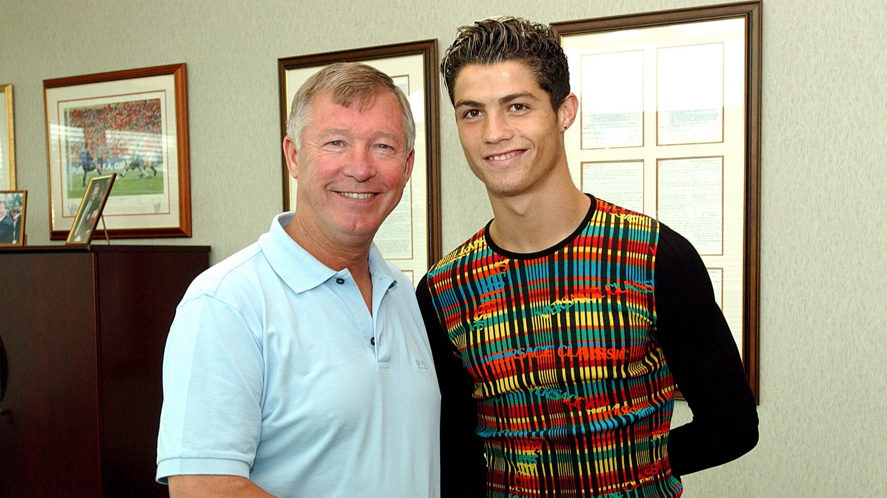
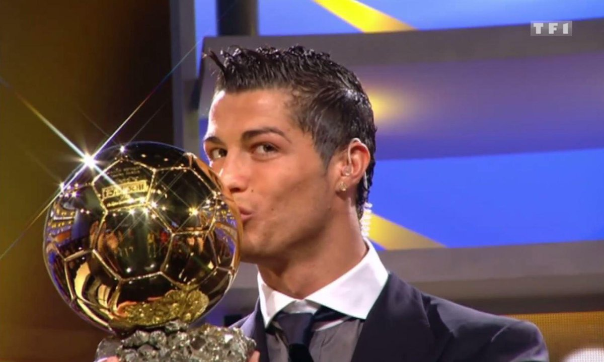
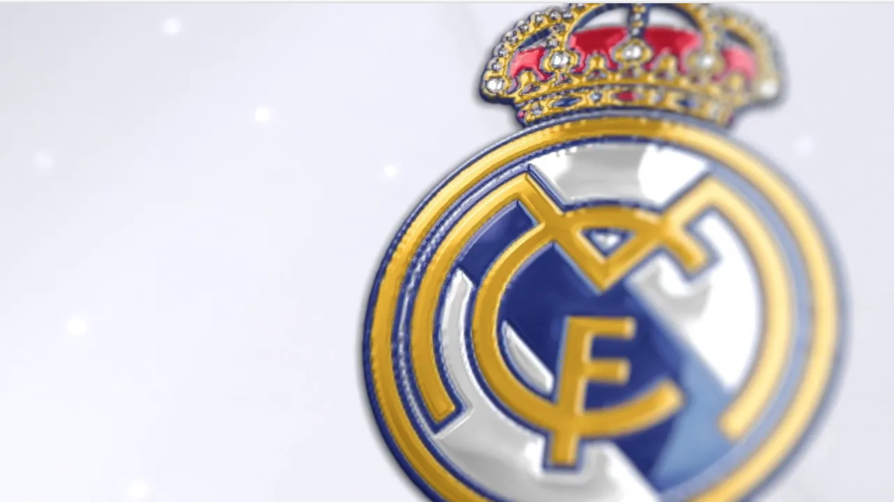

Le début de carrière de Cristiano Ronaldo
A l'âge de 7 ans, Cristiaono Ronaldo a vécu sa première expérience footballistique chez Andorinha, il joua ensuite chez Nacional pendant 2 ans. En 1997, il passe un test avec le Sporting CP, à l'âge de 12 ans, Cristiano Ronaldo signe son premier contrat avec l'académie de jeunesse du Sporting pour 1500 £. Au bout de 2 ans Cristiano Ronaldo s'est affirmé dans le club ; le 29 septembre 2002, il joue alors son premier match en premier division portugaise. Le 7 octobre 2002, il marque ses premiers buts en inscrivant un magnifique doublé face à Moreinense. Le 6 août 2003 : la carrière et la vie de Ronaldo va connaitre un grand tournant !! Le Sporting où joue Ronaldo remporte le match face à Manchester United 3-1. Suite à ce match, Alex Ferguson, le coach de cette équipe anglaise, a acheté le joueur portugais pour un prix de 12,24 millions de livres, il devient alors l'ado le plus cher de l'histoire du football anglais  Le 16 août 2003 : Cristiano Ronaldo fait ses débuts en premier League face à Bolton Wanderers. Il marque son premier but contre Portslouth le 1er novembre 2003, un magnifique but sur coup franc. Plus les années passent, Cristiano enchaine les succès avec Manchester. Il est vainqueur de la Coupe d'Angleterre en 2004, du championnat d'Angleterre en 2007,2008 et 2009 ou encore il remporte le trophée de la UEFA champion's League en 2008. Cette même année, il est élu Ballon d'or en 2008 et marque 42 buts dans toutes compétitions confondues.  Cette année remplie de succès était sa dernière chez Manchester United. La saison suivante il sera recruté par le meilleur club du monde : Le Real Madrid. 